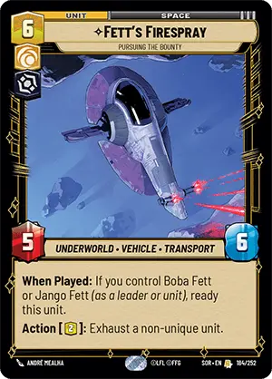

The Star Wars Unlimited Fan
The Star Wars Unlimited FanAbilities
Abilities are modifications to units that inhertantly add more diversity and uses to your troops. Here's a list of some of the most common abilities you will see:
When Played: [Ability]
This ability activates when this card is played. It is worth noting that you get to choose the order When Played effects come into effect. For example, you could use Energy Conversion Lab to play Fett's Firespray and when you do, you can activate the Ambush effect to attack with the unit then activate the When Played effect to ready it.
On Attack: [Ability]
This ability activates when this unit attacks. It's worth noting that On Attack triggers before dealing damage. This means that something you could do something like attack a unit with two HP remaining with a unit equiped with a Jedi Lightsaber and eliminate them before dealing damage, thus making your unit take no damage.
When This Unit Completes an Attack: [Ability]
This ability activates after this unit attacks and survives.
Keyword Abilities
Ambush
Ambush lets your unit attack another unit when played. This can be used to gain value off your unit by making it swing into a less valuable unit on the enemy side, reducing the enemy's ranks and bolstering your own at the same time.
Grit
Grit gives the unit +1/+0 for every tick of damage on it, making it more dangerous the more damaged it is.
Shielded
A Shielded unit comes into play with a shield token.
Sentinal
Sentinal units are special in that they must be removed before dealing with non-sentinal units and bases.
Sabetour
A unit with sabetour is free to ignore the restrctions imposed by sentinal units. Additionally, units with sabetour have an on attack trigger to defeat all shields on the defender.
Raid X
Raid makes your unit deal X extra damage whenever they attack.
Restore X
Restore makes it so that anytime your unit would attack, it would heal X damage from your base.
Overwelm
Overwelm makes it so that any extra damage leftover from this unit's attack goes to the enemy base.
Bounty - [Effect]
When a unit with a Bounty is defeated or captured, the opponent who caused the removal has the choice to claim the bounty. While most instances you see
Capture
Certain cards allow you to capture an enemy card with your own. To capture a card, take it out of play and put it under the capturing unit. When a card is captured, all upgrades and damage are removed from it. Any bounties on that unit are resolved. When the captured unit is rescued (either by removing the capturing unit from play or some other method), it is returned to its owner's control, exhausted.
Smuggle (Cost)
When you resource a card with Smuggle it isn't necessarily out of play. A card with Smuggle can be played for its smuggle cost out of the resource pile. When a card is smuggled out, replace it with the top card of your deck. Smuggling is generally more expensive to play, but at least has the flexibility to be played when you want.
Coordinate - [Ability]
Coordinate is an ability that grants another ability that works only when you control three or more units on the battlefield (including itself). It's worth noting that both leader units and token units count towards this requirement.
Exploit X
A unit with Exploit gains an alternate cost of sacrificing up to X number of units to reduce the cost by 2 each. While it is a fantastic way to get to more expensive cards quicker, those cards tend to be more expensive than they are worth.